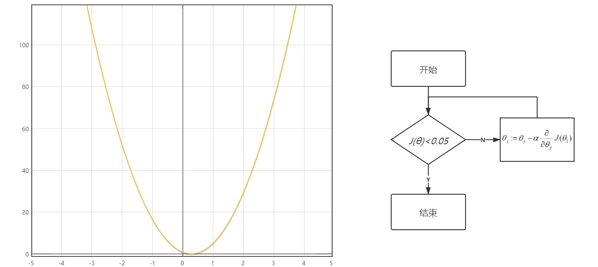
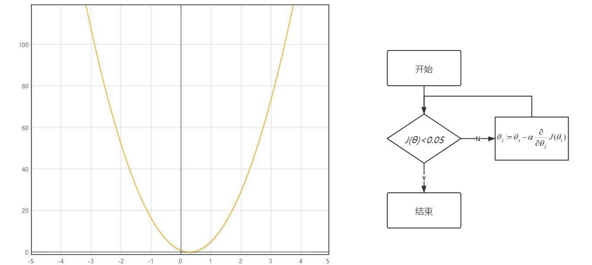

这是机器学习算法可视化系列的第一篇文章，主要介绍基础的线性回归模型。
回归是监督学习的一个重要问题，用于预测输入变量和输出变量之间的关系。 回归模型即是表示从输入变量到输出变量之间映射的函数。通常使用曲线/直线来拟合数据点，目标是使曲线到数据点的距离差异最小。
本文介绍的线性回归则是回归模型中最基础的一种，线性回归假设目标值与特征之间满足线性相关。 通过构建损失函数，求解损失函数最小时的θ1和θ0,从而得到回归直线：
求解最佳参数，需要一个标准来对结果进行衡量，为此我们需要定量化一个目标函数式，使得计算机可以在求解过程中不断地优化。 对于任何一对参数，我们都可以求出一条直线，并将x代入直线方程得到一个预测值y’。损失函数应该能够反映出预测值y’和实际值y之间的差异程度。 回归问题中，一般采用平方损失函数，定义如下： 将y’=θ1*x+θ0代入可以得到 此时求解最优直线参数的问题转化为了使损失函数J(θ0，θ1)的值最小的最优化问题。
下表记录的是某试验田施化肥量和水稻产量的数据。
假设施化肥量和水稻的产量是接近线性相关的，于是我们可以认为，预计水稻产量y’和施化肥量x之间满足方程：y’=θ1*x+θ0 在θ1和θ0不确定的情况下，有无数条直线。
为了在这无数条直线中找到最能反映施化肥量和水稻产量间统计学规律的直线，我们引入损失函数作为评价标准，损失函数为
实质上，损失函数就是所有预测点到实际点的距离的平方和取平均的一半。 在无数条直线中，有一条可以使损失函数的值最小，此时所有预测点到实际点的距离平方和是最小的，该直线也就是最优的直线。
以θ1为x轴，θ0为y轴，损失函数值J(θ0，θ1) 为z轴，将实例中损失函数的图像做出，可以直观发现它有唯一的最低点。
实际上，我们还有另一种方式反映损失函数最小时，θ0、θ1的值。 让我们保留xoy平面，并将所有J(θ0，θ1)值相同的点在平面上组成一个封闭曲面，就得到了轮状图。 轮状图比较接近地理中的等高线图，每一个封闭曲面上的点对应的J(θ0，θ1)都是相同的。 J(θ0，θ1)最小时对应的θ0、θ1就在所有“同心圆“的公共圆心处。
这有一个轮状图！
梯度下降法是求解函数最值的一种算法，它的主要目的是通过迭代找到目标函数的最小值。 梯度下降法的核心思想是先找一个初始点，然后从初始点开始寻找下一个离最低点更近的点，直至找到最低点。
这还有一个轮状图！
以下山做比喻，最低点就是山底，初始点就是山腰某处。想要从山腰到达山底只需要不断地沿着最陡峭的方向向下走。
寻找下一个点可以用公式： 其中，α被称为学习速率，相当于一个人迈出一步的距离，叫做梯度， 梯度是一个向量，函数在该点处沿着该方向（此梯度的方向）值变化最快，相当于山某处最陡峭的方向。
为了简化问题，我们先假设实例问题中水稻产量和施化肥量正相关，也就是θ0=0。 此时损失函数变为单变量函数 此时可以用导数代替梯度，以导数值趋近于零为最低点的判断条件，用梯度下降法求解最低点的过程如下：  有一点需要注意的是，学习速率α不能过大，否则可能会跨过最低点，这样永远也找不到最低点了。  大家可以在下图自行设置学习速率α与初始点x0，感受一下寻找最低点的过程。
Copyright © 2020.Company name All rights reserved.